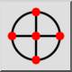
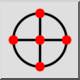

Odległość
Pasek narzędziowy / ikona:


Menu: Przyciąganie > Odległość
Skrót: S, D
Polecenia: snapdistance | sd
Jest to tłumaczenie automatyczne.
Pasek narzędziowy / ikona:


Menu: Przyciąganie > Odległość
Skrót: S, D
Polecenia: snapdistance | sd
Przyciski do punktów z podaną odległością do punktu końcowego linii lub łuków.